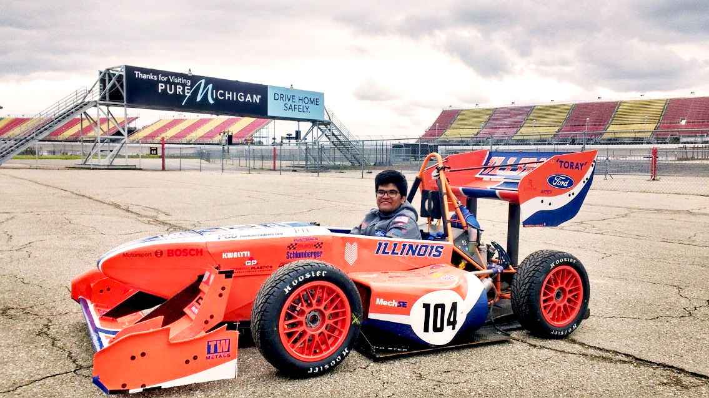

Hello! I'm a developer, designer and engineer majoring in Aerospace Engineering, with a minor in Computer Science at the University of Illinois at Urbana-Champaign. I'm interested in finding and building solutions to problems across disciplines and designing experiences that have a meaningful impact.
Last summer, I worked at Amadeus, in Boston, as a Software Engineering Intern, and built a dashboard to improve the efficiency of internal project management. Currently, I work at the Center for East Asian and Pacific Studies at the University of Illinois, where I'm designing and developing the Digital Asia platform, an online resource for videos and documentaries on culture in East Asia.
On campus, I'm involved with Illini Motorsports, my university's Formula SAE team. I'm fortunate to have this opportunity to work with some amazing people, and I'm currently the project lead for the CFD Automation Software project in the Aerodynamics subsystem.
I'm interested in human-centered design, and building products and artifacts that make peoples' lives better. I think my interest stems from being involved with space settlement design, where I was part of the human factors department, which was responsible for making our settlement capable of housing people (and keeping them safe and comfortable) in a hostile space environment. I'm also passionate about designing interfaces for digital products and creating experiences that leave a positive impact on users.
In my free time, I like to play football (soccer), and on the pitch I've made a reputation for pulling off some exquisite rabonas but also giving possession of the ball away because of unecessary flicks.
{kind=link}